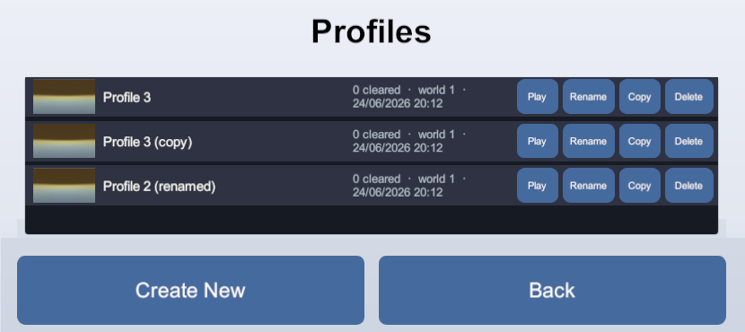

Slots and save menus
Set up save slots
A slot is a named save, and a persistent asset can save into as many slots as you want. Its manager holds one of them at a time, and every load and save goes to that one.
To use slots:
- Turn on Use Slot on the asset's manager.
- Set
manager.Slotfor that one asset, orSlots.GlobalSlotfor every active manager at once, including the ones that come into scope later.
Until a slot is set, the asset neither saves nor loads.
List slots without loading them
A slot registry is a persistent asset of its own that records one entry per slot as that slot is written: when it was saved, a summary you choose, and an optional thumbnail. It is what a save-select menu reads, because it answers with no save loaded and no slot selected.
A Persistent Variables asset has a ready-made registry.
For a data class of your own, inherit
PersistentSlotRegistry<TTarget,
TInfo>, return the summary from CaptureInfo, and, for a thumbnail, override
CaptureScreenshotAsync with one of
SaveScreenshot's own captures:
[Serializable]
public struct ProfileSummary
{
public int clearedCount;
}
public class ProfileRegistry : PersistentSlotRegistry<ProfileData, ProfileSummary>
{
protected override ProfileSummary CaptureInfo(ProfileData target)
=> new() { clearedCount = target.ClearedLevels.Count };
protected override Awaitable<SaveScreenshot> CaptureScreenshotAsync(ProfileData target)
=> SaveScreenshot.CaptureAsync(Camera.main);
}Create its asset with Create > Persistent Asset > Persistent Object…, and give it a manager of its own.
Its entries read back latest first:
foreach (SlotEntry<ProfileSummary> entry in profileRegistry.Entries)
AddSlotButton(entry.Slot, entry.Info.clearedCount, entry.SavedUtc, entry.Screenshot);
string latest = profileRegistry.LatestSlot; // for a "Continue" button
Work with other slots from code
The static Slots class acts on a slot's stored data
while the player stays on the slot they are on. Copy, Rename and
Delete move storage around without loading any of it:
Slots.Copy("Slot 1", "Slot 2", playerData, worldData);
Slots.Rename("Slot 2", "Backup", playerData);
Slots.Delete("Backup", playerData);Two more reach between a slot and the running game:
// Write the live data to another slot; the current slot's save is untouched
Slots.SaveTo("snapshot 0", playerData);
// Bring a slot's saved data into the ongoing game; the next save still lands on the current slot
Slots.LoadFrom("snapshot 0", playerData);For every shape these calls come in, refer to the Slots API reference.
Add a quick save
A quick save writes the current state into a small ring of numbered slots: each quick save takes the next slot of the ring, and once the ring is full the oldest one is overwritten. The player keeps the slot they were on, and the save it holds is untouched, so a quick save never costs them their ordinary one.
NextRingSlot names the slot to write, and the registry lists the ring back latest
first:
const string Ring = "quicksave ";
const int RingSize = 3;
void QuickSave()
{
string slot = profileRegistry.NextRingSlot(Ring, RingSize);
Slots.SaveTo(slot, profileData);
}
void QuickLoad()
{
foreach (string slot in profileRegistry.SavedSlots) // latest first
if (slot.StartsWith(Ring))
{
Slots.LoadFrom(slot, profileData);
return;
}
}Each write records its own entry, with its save time, summary and thumbnail, so the ring lists in a menu like any other slot. To put the pair on a button without writing this yourself, use the Quick Save Button prefab.
LoadFrom needs a current slot, because the saves that
follow it go there.New Game and Continue
With slots, the registry answers both buttons before anything is loaded:
- Continue is
Slots.GlobalSlot = profileRegistry.LatestSlot. - New Game is
Slots.GlobalSlot = profileRegistry.NextFreeSlot("save "), which deletes nothing.
An empty registry means there is nothing to continue, so leave that button disabled while
Entries is empty.
Without slots
One asset then holds one save, and whether it exists is what a Continue button needs
to know. Readiness.Origin answers it: StoredSave and Imported both
mean there is a save.
await profileData.PersistenceManager.WhenReady;
Readiness readiness = profileData.PersistenceManager.Readiness;
bool hasSave = (readiness.Origin == DataOrigin.StoredSave) || (readiness.Origin == DataOrigin.Imported);
continueButton.interactable = readiness.IsReady && hasSave;A new game then deletes that one save. Clear pauses saving until the next load, so follow
it with one:
await profileData.PersistenceManager.ClearAsync();
await profileData.PersistenceManager.LoadAsync(); // nothing to read, and it ends ready on defaults